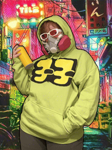
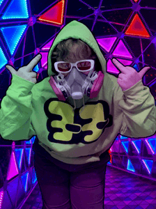

Yoyo
| Origin | Jet Set Radio (game) |
|---|---|
| Year Finished | 2026 |
| Status | Casual |
Intro
There ain't many games out there like Jet Set Radio. It's role in defining Shibuya Punk/Grind Fiction and the funky beats of Hideki Naganuma make for a world I am glad to live in. Am I any good at the game? Lmao no. I can't even play this character. But I gotta respect a fellow redhead that likes green!
Photos
{kind=link}

{kind=link}

Hoodie
Just as luck had it, I was able to thrift a white hoodie! I did try looking for a green hoodie for forever but that was harder than I thought. It's polyester, so I dyed it using Rit Dye's Frosty Lime formula (2Tbsp Daffodil Yellow, 3/4tsp Tropical Teal) to get as close a color as possible to the real deal. It looks A LOT more accurate in person vs the sites swatch, though is definitely still rather desaturated.
Graphics are painted on with fabric paint from the store, I think it's Tulip brand? I made my own hi-res version of the graphics to reference, I'll share them here!
Glasses
So these glasses are actually two pairs mixed together, because no one in the world sells white frames with red lenses. The glasses come from this Amazon listing, and I just popped out the lenses and swapped them. It was a little tricky, I wish I could remember my tricks for doing so, but alas I do not. Good luck if you do this. Now I have a black frames with black lenses Im not sure what to do with. Maybe I'll wear them.
I wish I knew a good way of tinting them to you cant see my eyes, but I also do NOT want a repeat of Biker where I cannot see through that shit.
Prop
I printed out Amethyst3D's Spray can prop with minor edits as I didn't feel like doing all the tech. Used a spray top I kept on hand for this, the bottle wouldn't fit but I didn't care, and I managed to find a ball bearing on the floor in the basement like I was blessed by some unknown entity with a little rattle ball for this project. I hot glued the spray top to the grey/silver of the can and shaved away excess glue to get a snug fit. All filament was Inland brand, nothing fancy or shiny.
Other
Pants are dress pants I just Have, likely thrifted. I don't know about anyone else but I don't think you wear a belt with sweats, and I've never seen grey jeans before.
I use a respirator as an accessory because these kids really should be wearing masks with vapor filters, spray paint ain't good for your lungs! At cons I wear it around my neck as its hard to hear me through.
One of these days I'll make covers for my quad skates that match his skate designs!
↑ Back to top